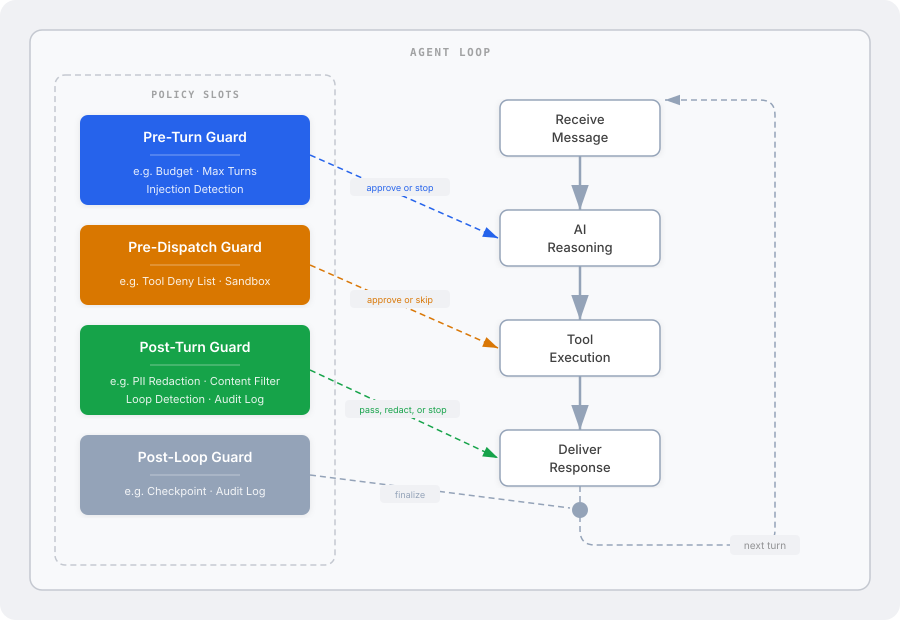

Your agent is fast. It reasons, calls tools, and responds without asking permission. That's the whole point.
But maybe it shouldn't have permission to do everything.
You won't. Nobody does. And when someone finally bolts on a content filter three sprints before launch, it runs as a second LLM call that doubles your latency and sometimes hallucinates its own violations. We've all seen it.
No shade. Okay, a little shade.
Swink Agent handles this differently. Policy guardrails are compiled into the agent loop itself. They run as native Rust code — not extra LLM calls, not a sidecar service, not a YAML file you'll forget to update. Every LLM call, every tool execution, every response passes through these gates before anything reaches the outside world.
The agent loop has four policy checkpoints. Each one can approve, modify, or halt the agent before the next stage runs. Think of them as bouncers at a very exclusive nightclub, except the nightclub is your production system.

These ship with the framework. Enable what you need, ignore what you don't. Zero overhead when unused — we measured.
| Policy | Checkpoint | What it does |
|---|---|---|
| Budget | Pre-Turn | Stops the agent when cost or tokens exceed your limit |
| Max Turns | Pre-Turn | Caps reasoning cycles so your agent doesn't monologue forever |
| Tool Deny List | Pre-Dispatch | Blocks specific tools. No, you may not call rm -rf |
| Sandbox | Pre-Dispatch | Restricts file access to approved directories. Path traversal? Denied |
| Loop Detection | Post-Turn | Catches the agent repeating itself in an existential spiral |
| Prompt Injection | Pre + Post | Detects attempts to override instructions. Both directions |
| PII Redactor | Post-Turn | Strips personally identifiable information before delivery |
| Content Filter | Post-Turn | Blocks responses matching prohibited patterns |
| Checkpoint | Post-Turn | Saves agent state after each turn for recovery and audit |
| Audit Logger | Post-Turn | Records everything. For compliance, or for when things get weird |
The guardrails are built in. Ship with confidence.
github.com/SuperSwinkAI/Swink-Agent
← Back to Swink Agent